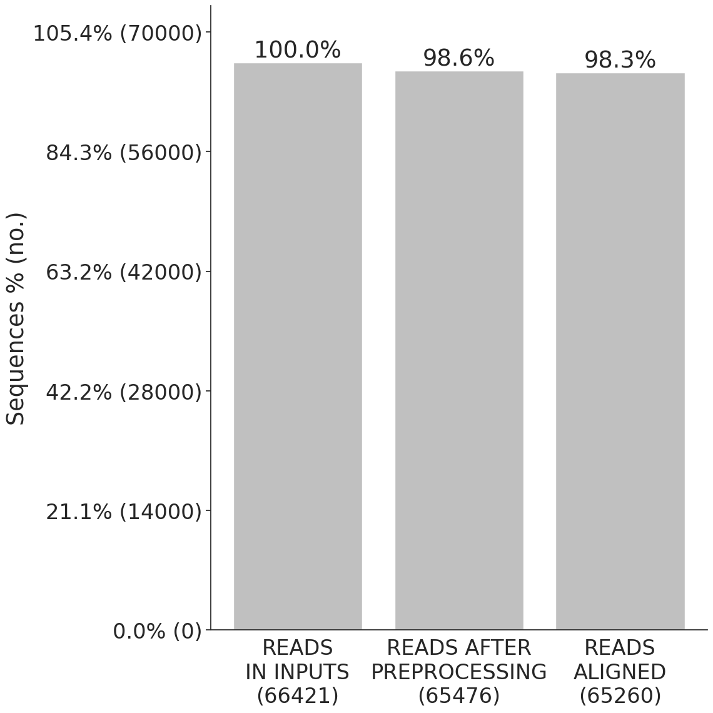
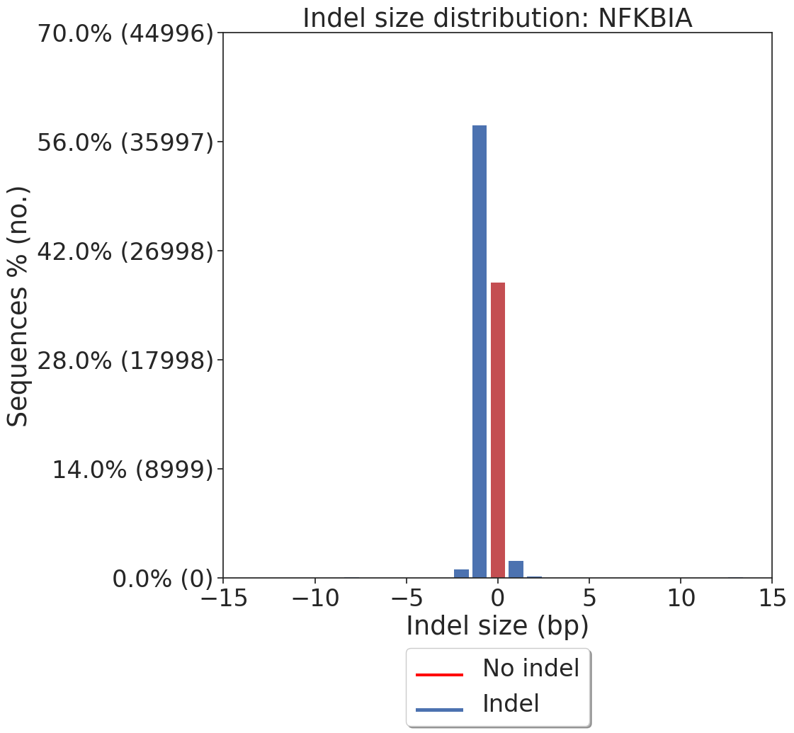
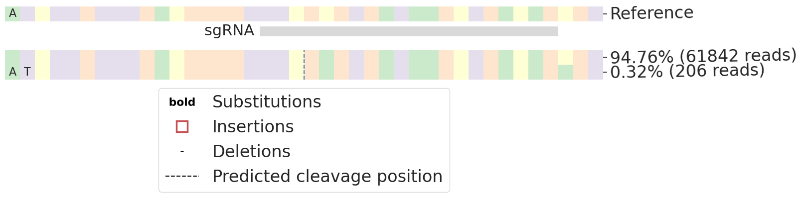
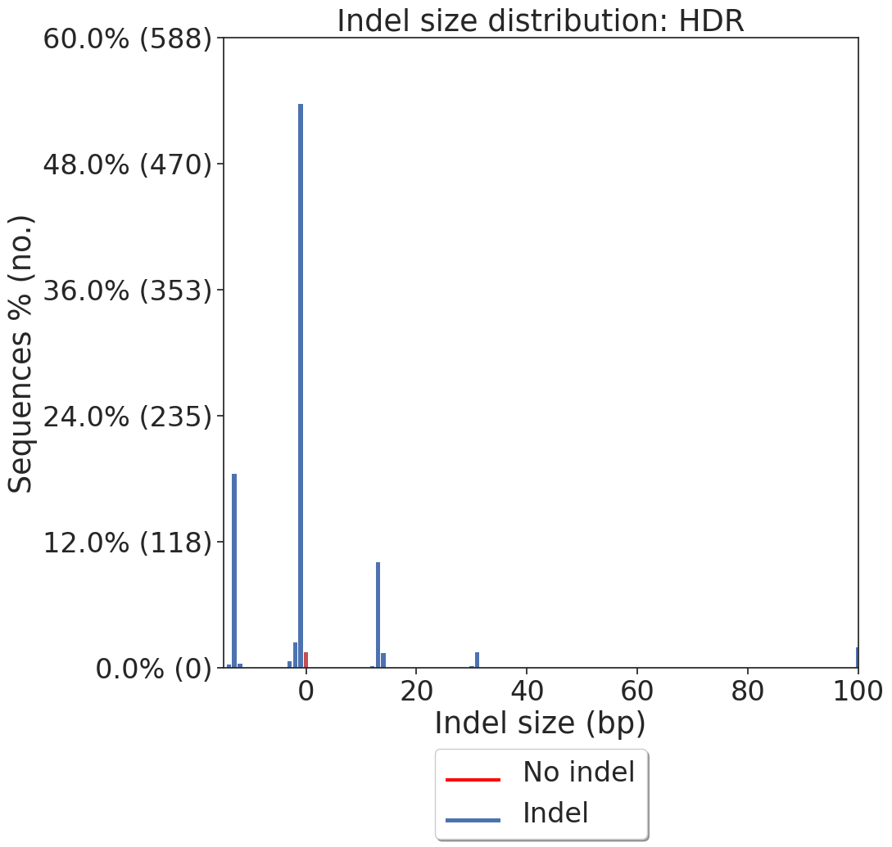
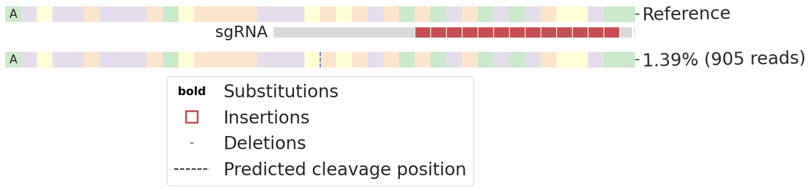

mNGplate19_sorted_B4_NFKBIA-C
CRISPResso2 run information

Data: Mapping statistics
CRISPResso version: 2.2.14
Run completed: 2024-05-11 00:18:04
Amplicon sequence:
GCAGTGTGCAGTGTGGATATAAGTACACCCTTTAAATTTTTTCTTCTTTTTTCTTTTTTTAGAAAAATAAAACTTTTTTTTTGTACAAATATACAAGTCCATGTTCTTTCAGCCCCTTTGCGCTCATAACGTCAGACGCTGGCCTCCAAACACACAGTCATCATAGGGCAGCTGAAAACAAGGGGAAAAAAGACACGTTAAGCTTCCGGAGCGGAGCTCTGCCAAGCTACCGGGATGGGGAGGCCACTACTGGAAATAAC
Guide sequence:
GTCTGACGTTATGAGCGCAA
Command used:
/home/duopeng/miniforge3/envs/DeepGenotype/bin/CRISPResso --fastq_r1 /mnt/c/Users/duo.peng/Documents/DeepGenotype/test_MiSeq_INS/fastq/mNGplate19_sorted_B4_NFKBIA-C_S103_R1_001.fastq.gz --fastq_r2 /mnt/c/Users/duo.peng/Documents/DeepGenotype/test_MiSeq_INS/fastq/mNGplate19_sorted_B4_NFKBIA-C_S103_R2_001.fastq.gz --amplicon_seq GCAGTGTGCAGTGTGGATATAAGTACACCCTTTAAATTTTTTCTTCTTTTTTCTTTTTTTAGAAAAATAAAACTTTTTTTTTGTACAAATATACAAGTCCATGTTCTTTCAGCCCCTTTGCGCTCATAACGTCAGACGCTGGCCTCCAAACACACAGTCATCATAGGGCAGCTGAAAACAAGGGGAAAAAAGACACGTTAAGCTTCCGGAGCGGAGCTCTGCCAAGCTACCGGGATGGGGAGGCCACTACTGGAAATAAC --expected_hdr_amplicon_seq GCAGTGTGCAGTGTGGATATAAGTACACCCTTTAAATTTTTTCTTCTTTTTTCTTTTTTTAGAAAAATAAAACTTTTTTTTTGTACAAATATACAAGTCCATGTTCTTTCAGCCCCTTTGCGCTCACATCATATCGGTAAAGGCCTTTTGCCACTCCTTGAAGTTGAGCTCGGTACCACTTCCTGGACCTTGAAACAAAACTTCCAATCCGCCACCTAACGTCAGACGCTGGCCTCCAAACACACAGTCATCATAGGGCAGCTGAAAACAAGGGGAAAAAAGACACGTTAAGCTTCCGGAGCGGAGCTCTGCCAAGCTACCGGGATGGGGAGGCCACTACTGGAAATAAC --amplicon_name NFKBIA --guide_seq GTCTGACGTTATGAGCGCAA --name mNGplate19_sorted_B4_NFKBIA-C --quantification_window_size 50
Parameters:
allele_plot_pcts_only_for_assigned_reference: False aln_seed_count: 5 aln_seed_len: 10 aln_seed_min: 2 amplicon_min_alignment_score: amplicon_name: NFKBIA amplicon_seq: GCAGTGTGCAGTGTGGATATAAGTACACCCTTTAAATTTTTTCTTCTTTTTTCTTTTTTTAGAAAAATAAAACTTTTTTTTTGTACAAATATACAAGTCCATGTTCTTTCAGCCCCTTTGCGCTCATAACGTCAGACGCTGGCCTCCAAACACACAGTCATCATAGGGCAGCTGAAAACAAGGGGAAAAAAGACACGTTAAGCTTCCGGAGCGGAGCTCTGCCAAGCTACCGGGATGGGGAGGCCACTACTGGAAATAAC annotate_wildtype_allele: assign_ambiguous_alignments_to_first_reference: False auto: False bam_chr_loc: bam_input: bam_output: False base_editor_output: False bowtie2_index: coding_seq: conversion_nuc_from: C conversion_nuc_to: T crispresso1_mode: False debug: False default_min_aln_score: 60 discard_guide_positions_overhanging_amplicon_edge: False discard_indel_reads: False dsODN: dump: False exclude_bp_from_left: 15 exclude_bp_from_right: 15 expand_allele_plots_by_quantification: False expand_ambiguous_alignments: False expected_hdr_amplicon_seq: GCAGTGTGCAGTGTGGATATAAGTACACCCTTTAAATTTTTTCTTCTTTTTTCTTTTTTTAGAAAAATAAAACTTTTTTTTTGTACAAATATACAAGTCCATGTTCTTTCAGCCCCTTTGCGCTCACATCATATCGGTAAAGGCCTTTTGCCACTCCTTGAAGTTGAGCTCGGTACCACTTCCTGGACCTTGAAACAAAACTTCCAATCCGCCACCTAACGTCAGACGCTGGCCTCCAAACACACAGTCATCATAGGGCAGCTGAAAACAAGGGGAAAAAAGACACGTTAAGCTTCCGGAGCGGAGCTCTGCCAAGCTACCGGGATGGGGAGGCCACTACTGGAAATAAC fastq_output: False fastq_r1: /mnt/c/Users/duo.peng/Documents/DeepGenotype/test_MiSeq_INS/fastq/mNGplate19_sorted_B4_NFKBIA-C_S103_R1_001.fastq.gz fastq_r2: /mnt/c/Users/duo.peng/Documents/DeepGenotype/test_MiSeq_INS/fastq/mNGplate19_sorted_B4_NFKBIA-C_S103_R2_001.fastq.gz file_prefix: flash_command: flash flexiguide_homology: 80 flexiguide_name: flexiguide_seq: None force_merge_pairs: False guide_name: guide_seq: GTCTGACGTTATGAGCGCAA ignore_deletions: False ignore_insertions: False ignore_substitutions: False keep_intermediate: False max_paired_end_reads_overlap: 100 max_rows_alleles_around_cut_to_plot: 50 min_average_read_quality: 0 min_bp_quality_or_N: 0 min_frequency_alleles_around_cut_to_plot: 0.2 min_paired_end_reads_overlap: 10 min_single_bp_quality: 0 n_processes: 1 name: mNGplate19_sorted_B4_NFKBIA-C needleman_wunsch_aln_matrix_loc: EDNAFULL needleman_wunsch_gap_extend: -2 needleman_wunsch_gap_incentive: 1 needleman_wunsch_gap_open: -20 no_rerun: False output_folder: place_report_in_output_folder: False plot_histogram_outliers: False plot_window_size: 20 prime_editing_nicking_guide_seq: prime_editing_override_prime_edited_ref_seq: prime_editing_override_sequence_checks: False prime_editing_pegRNA_extension_quantification_window_size: 5 prime_editing_pegRNA_extension_seq: prime_editing_pegRNA_scaffold_min_match_length: 1 prime_editing_pegRNA_scaffold_seq: prime_editing_pegRNA_spacer_seq: quantification_window_center: -3 quantification_window_coordinates: None quantification_window_size: 50 save_also_png: False split_interleaved_input: False stringent_flash_merging: False suppress_amplicon_name_truncation: False suppress_plots: False suppress_report: False trim_sequences: False trimmomatic_command: trimmomatic trimmomatic_options_string: use_legacy_insertion_quantification: False verbosity: 3 write_cleaned_report: False write_detailed_allele_table: False zip_output: False
HDR summary report (all reads aligned to NFKBIA)
Reads are aligned to each amplicon sequence separately. Quantification and visualization of these reads are shown for each amplicon below:
Amplicons
Reads aligning to NFKBIA
Nucleotide composition for NFKBIA

Modification lengths for NFKBIA

Data: Indel histogram
Indel characterization for NFKBIA
Allele plots for NFKBIA

Data: Allele frequency table
Reads aligning to HDR
Nucleotide composition for HDR
Modification lengths for HDR

Data: Indel histogram
Indel characterization for HDR
Allele plots for HDR

Data: Allele frequency table